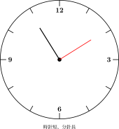

| # | 題目 | 答案 | 類型 |
|---|---|---|---|
| 1 | 1 小時 = ＿＿ 分鐘。1 分鐘 = ＿＿ 秒。 | 2 | manual |
| 2 | 半小時 = ＿＿ 分鐘。2 小時 = ＿＿ 分鐘。 | ___ | manual |
| 3 | 120 秒 = ＿＿ 分鐘。（120 ÷ 60 = ?） | ___ | manual |
| 4 | 1.5 小時 = ＿＿ 小時 ＿＿ 分鐘（唔係 1h50m！） | ___ | manual |
| 5 | 由 2:15 到 3:00，經過了幾多分鐘？ | ___ | manual |
| 6 | 3 小時 = ＿＿ 分鐘 | ___ | manual |
| 7 | 4 分鐘 = ＿＿ 秒 | ___ | manual |
| 8 | 0.5 小時 = ＿＿ 分鐘（記得乘 60！） | ___ | manual |
| 9 | 2.5 小時 = ＿＿ 小時 ＿＿ 分鐘 | ___ | manual |
| 10 | 1:40 + 50 分鐘 = ＿＿：＿＿ | 90 | auto |
| 11 | 3:10 + 2:55 = ＿＿：＿＿ | 12 | auto |
| 12 | 由 9:20 到 11:05，經過了多少分鐘？ | ___ | manual |
| 13 | 2 分鐘 = ＿＿ 秒 | ___ | manual |
| 14 | 1 小時 30 分鐘 = ＿＿ 分鐘 | ___ | manual |
| 15 | 2:00 + 30 分鐘 = ＿＿：＿＿ | 30 | auto |
| 16 | 0.25 小時 = ＿＿ 分鐘（0.25 x 60 = ?） | 15 | auto |
| 17 | 3.5 小時 = ＿＿ 小時 ＿＿ 分鐘 | ___ | manual |
| 18 | 比賽 8:45 開始，10:20 結束。比賽用了多少時間？ | ___ | manual |
| 19 | 火車 14:25 開出，18:10 到達。車程是多少小時多少分鐘？ | ___ | manual |
| 20 | 小明做功課用了 1.25 小時。即係幾多分鐘？如果佢 3:30 開始，幾點做完？ | ___ | manual |
| 21 | 電視節目每集 45 分鐘。連續看 4 集，共要多少小時多少分鐘？由 2:00 開始看，看到幾點？ | ___ | manual |
| 22 | ⏰ 小息由 10:15 到 10:35。小息有幾多分鐘？ | ___ | manual |
| 23 | 🏊 小明游水用了 2 分鐘 30 秒。即係幾多秒？ | ___ | manual |
| 24 | 📺 卡通片每集 25 分鐘。看了 3 集，共看了多少分鐘？多少小時多少分鐘？ | ___ | manual |
| 25 | 🍳 媽媽煮飯用了 1.5 小時。即係幾多分鐘？如果用 2:00 開始煮，幾點煮完？ | ___ | manual |
| 26 | ✈️ 飛機 9:30 起飛，飛行 3 小時 45 分鐘。幾點到達？（注意時差：唔使理） | ___ | manual |
| H1 | 5 分鐘 = ＿＿ 秒 | ___ | manual |
| H2 | 90 分鐘 = ＿＿ 小時 ＿＿ 分鐘 | ___ | manual |
| H3 | 1:20 + 40 分鐘 = ＿＿：＿＿ | 60 | auto |
| H4 | 0.5 小時 = ＿＿ 分鐘 | ___ | manual |
| H5 | 判斷對錯：1.5 小時 = 1 小時 50 分鐘。如果錯，正確答案係咩？ | ___ | manual |
| H6 | 演唱會 19:30 開始，22:15 結束。共多少小時多少分鐘？ | ___ | manual |
| H7 | 小明每日練琴 45 分鐘。一星期（7日）共練了多少小時多少分鐘？ | ___ | manual |
| H8 | 挑戰：0.75 小時 + 45 分鐘 = ？小時？分鐘（提示：轉換成同一單位！） | ___ | manual |
霖楓學苑 · LF Academy · 自動答案生成器 v1.0 · 手動題目請老師覆核